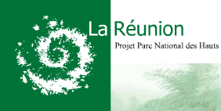

Le Parc national de la Réunion, développement durable des Hauts
La nature de France et la variété de ses paysages en font une
destination de choix pour les touristes du monde entier. Les français
sont conscient de la nécessité de préserver l'identité des régions et la
diversité naturelle de ses sites.Les habitants se regroupent donc pour essayer de maintenir l'équilibre
naturel de leur région par la création de réserves naturelles.
Quand le site est remarquable ou que la
préservation d'une espèce en dépend, les pouvoirs publics apportent
leur concours en empêchant, par la loi, la dégradation des milieux naturels.
C'est ainsi par exemple qu'est né en 1963 le national de la Vanoise,
premier parc national de France pour protéger le bouquetin menacé
d'extinction dans cette partie des Alpes.
Vallée de Takamaka - photo de Ksisk
{kind=link}
L'idée de protéger la faune et la flore de la Réunion n'est pas nouvelle. La réserve naturelle de Mare Longue est crée en 1981 pour protéger la dernière forêt primaire de l'archipel des Mascareignes. En 1991, une autre réserve naturelle, celle de la Roche Écrite est crée pour protéger le tuit-tuit (ou échenilleur) vivant dans les hauts de Saint-Denis.

L'idée de créer un parc naturel à la Réunion date de 1992 et la Région
décidera de porter le projet en 1995 avec la publication de la Charte
réunionnaise de
l'environnement et le Schéma d'aménagement régional qui projette la
création du parc sur une grande partie des régions montagneuses de la
région. Ces régions difficilement cultivables sont appelée ici les
hauts.
Après deux ans d'études (1998-2000), trois ans de consultations
(2001-2004) puis deux ans (2004-2006) de préparation du projet avec les
collectivités et l'état, le Parc national de La Réunion, neuvième parc
national français voit le jour le 5 mars 2007, en pleine période de cyclones. À l'heure ou je vous le
présente, le parc existe mais il a encore besoin d'une bonne équipe
pour le faire vivre. Son site web ne présente que le projet et recrute
quelques 8 personnes. Espérons que le nouvel établissement public
dénichera un webmaster talentueux pour faire vivre le parc sur la toile.